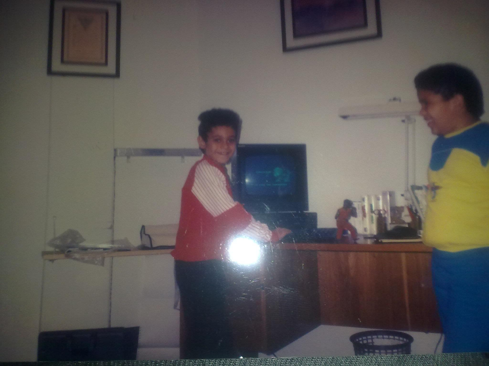
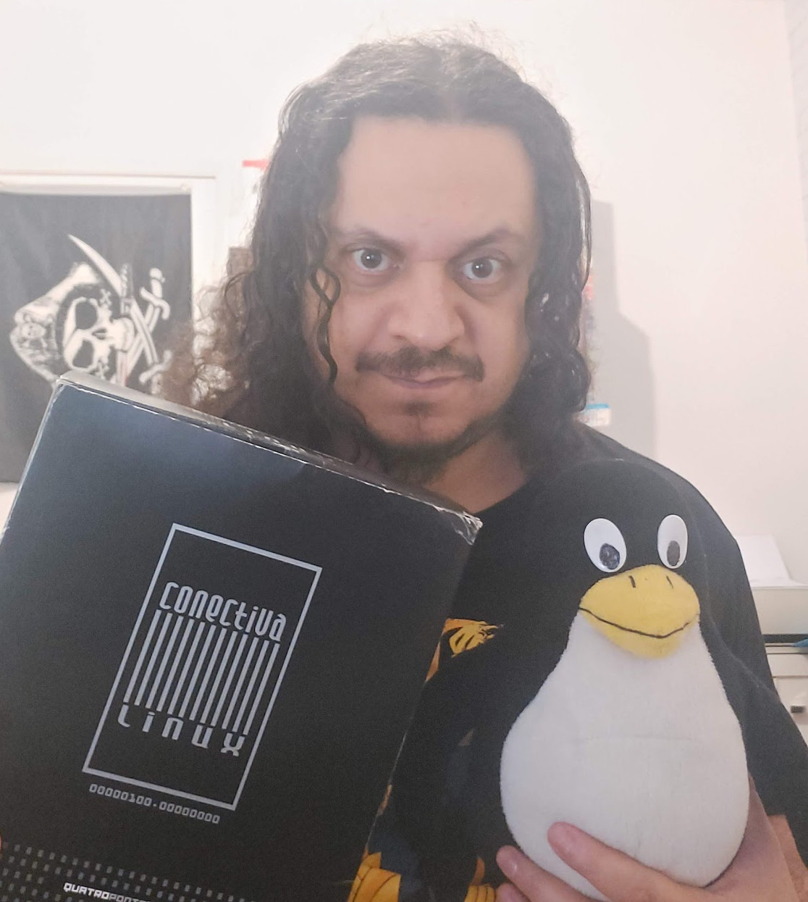
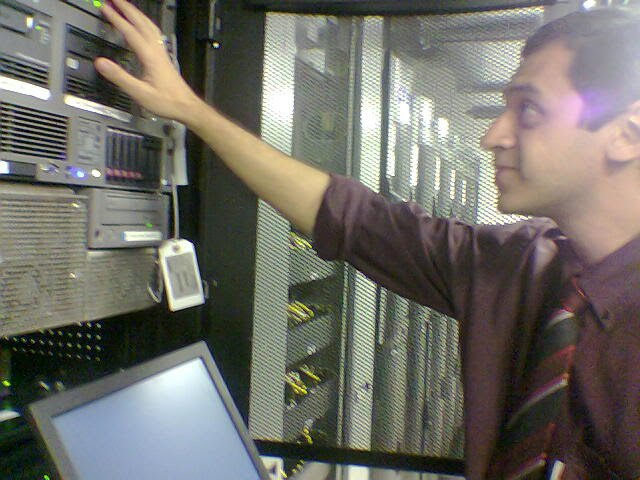

I always liked computers and technology. From my early days, I was fascinated by the wonders of technology and how things worked. My journey started with video games, having consoles like the Master System and Mega Drive. However, it was not just the games that captured my interest; it was the technology behind them that intrigued me even more.
My first computer was an MSX, specifically a Gradiente Expert DD Plus, where I began learning programming concepts with LOGO and BASIC. This early exposure to programming sparked a passion for technology that would only grow stronger over the years.
As I delved deeper into the world of computers, I found myself configuring sound cards, managing IRQs, and setting up DMA just to make games work on my 386 or 486. The satisfaction of solving these technical challenges fueled my desire to learn more.
I took my enthusiasm a step further by building my own computers, starting with 486s, moving on to Pentiums, and even the K6-2 processors. This hands-on experience was invaluable and cemented my love for hardware and system configuration. During my teenage years, I worked at a computer shop doing maintenance, gaining practical experience and honing my skills.
Besides computers, I was also fascinated by machines and engines. Boats, trains, airplanes, and trucks captured my imagination. At one point, I even considered becoming a truck driver or pursuing a career in architecture or civil engineering. However, the allure of computers was too strong, and it became clear that my future lay in technology.
My journey with technology has been a lifelong adventure, filled with learning and exploration. This passion has defined my career and continues to drive me to this day.

In the late 1990s, I was working in help desk and short after that with network administration with Novell and Windows NT. My career took a significant turn when I discovered Linux at the FENASOFT computer fair. Conectiva, a company present at the fair, provided me with a copy of Linux. I spent weeks installing and configuring it, ensuring full graphics support, CD recording, and sound functionality. At that time it was not so easy like it is today.
Initially, I used Conectiva Linux until version 10. My exploration of Linux distributions also included Slackware, Red Hat, and Gentoo, before settling on Debian, which I love and continue to use to this day as my favorite distro.
I collect Big Box PC software and games, and Conectiva Boxes have a special place in my collection
I gained a lot of knowledge not only how to make Linux work in computer desktops or notebooks, but also regarding networking, storage, processes management and other System Administration themes. This new knowledge quickly enabled me to migrate older networks from Novell and Windows NT to Linux.

My expertise didn't stop at Linux. I gained extensive experience with various commercial UNIX systems, including Solaris, HP-UX, AIX, and even FreeBSD. I managed storage solutions, databases, and middleware. Technologies I worked with included SOAP architecture, JBoss, Tomcat, WebSphere, WebLogic, VMware, and Solaris Zones. Additionally, I developed proficiency in shell scripting and some automation tools like Puppet, Chef and Ansible, further enhancing my capabilities.
Throughout my career, I have had the opportunity to deal with complex systems and architectures, significantly broadening my knowledge and skills. My journey from help desk support to managing sophisticated UNIX systems showcases my dedication to continuous learning and adapting to new technologies.
While working at Proteus (now called SEK), a security consultancy, as a Unix System Administrator focused on security, I noticed a significant industry shift. Many clients were migrating to Linux, abandoning expensive Unix systems and hardware in favor of cloud solutions and containers. New companies, such as fintechs and food delivery apps, were being born in the cloud, with microservices architectures and a strong DevOps culture.
This transition compelled me to update my knowledge and skills rapidly. I began incorporating CI/CD tools, Python, Kubernetes, Docker, Terraform, and Cloud services into my portfolio. Initially, I made the mistake of focusing solely on tools. However, I soon realized that DevOps and SRE are not just about the tools—they are about culture and philosophy.
My understanding deepened after reading influential books like "The Phoenix Project" and "The DevOps Handbook" by Gene Kim, and "Site Reliability Engineering" by Google. These books provided invaluable insights into the principles and practices that underpin successful DevOps and SRE implementations.
Today, I am well-versed in these modern practices, continually applying the cultural and philosophical lessons learned from these resources. This ongoing journey has allowed me to effectively contribute to and lead initiatives that drive operational excellence and innovation.
For more details, check my Linkedin.
As a System Administrator, I handle a wide range of tasks to ensure the smooth operation and security of IT infrastructure. This includes networking tasks such as DHCP, DNS, IP addressing, routing, and configuring firewalls. I manage storage solutions, oversee process management, and ensure that systems run efficiently and securely. Responsibilities also encompass user management, system updates, backups, and disaster recovery planning. My role involves troubleshooting hardware and software issues, monitoring system performance, and implementing necessary upgrades to maintain optimal system functionality.
Site Reliability Engineering (SRE) is focused on ensuring reliable and scalable systems. Key pillars include:
Error Budget:This concept balances new feature development and system reliability by allowing a defined amount of acceptable errors or downtime.
Reliability:Ensuring systems are dependable and perform well under expected conditions.
Elimination of TOIL:Reducing repetitive and manual work through automation and process improvements.
Measure (Observability):Implementing tools and practices to monitor system health, performance, and detect issues proactively.
Blameless Postmortem:Conducting incident reviews without blame to understand failures and improve systems and processes.
SRE practices aim to enhance system reliability and efficiency by leveraging automation, proactive monitoring, and continuous improvement.
DevOps focuses on streamlining software delivery and infrastructure management through:
Continuous Integration/Continuous Delivery (CI/CD):Automating the software build, test, and deployment processes to ensure faster and more reliable releases.
Release Automation:Using tools to automate the deployment of software changes to various environments, reducing manual intervention and errors.
Environment Builds:Setting up and maintaining consistent environments for development, testing, and production to ensure software behaves predictably across stages.
Configuration Management:Managing and maintaining software configurations to ensure consistency and compliance across systems.
Infrastructure as Code (IaC):Using code to manage and provision infrastructure, allowing for version control, automation, and scalability.
DevOps practices aim to improve collaboration between development and operations teams, enhance delivery speed, and ensure reliable and scalable infrastructure.

He is a highly qualified professional, transparent in communication, qualitative in deliveries, punctual with his commitments, has high technical capacity for dialogue with the operational team, and is objective when subordinate to senior management. An excellent professional with whom I have the pleasure of working.

I had the opportunity to work with Tiago at Hyundai AutoEver. Tiago is a highly experienced professional and has no problem sharing knowledge. In the short time I worked with him, I significantly developed my Linux skills. He is a goal-oriented person, has an analytical vision, and excels in various areas.